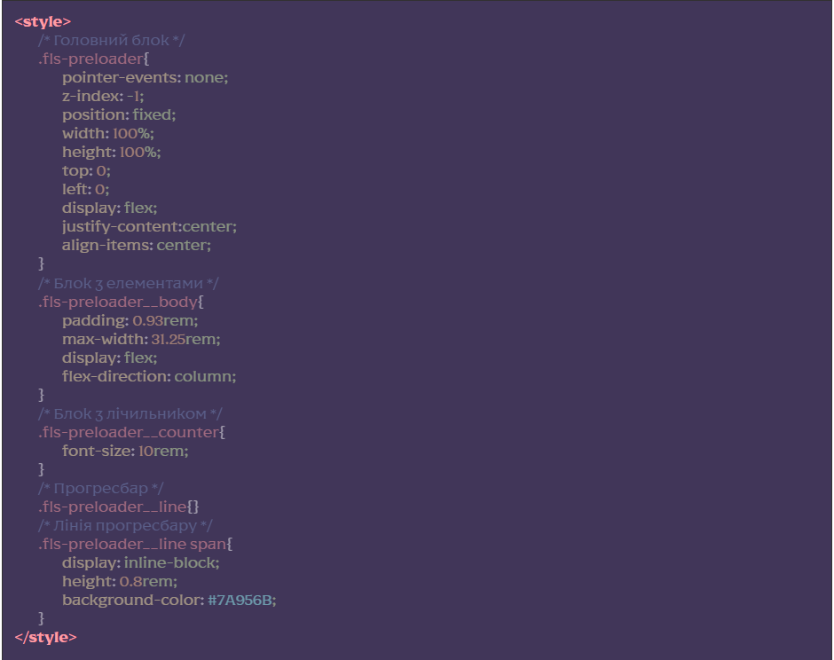

Підключення модуля
[HTML] для усіх HTML-сторінок, де потрібно використовувати прелоадер додаємо підключення файлу html/_preloader.htm

Зробити це потрібно внизу файлу перед підключенням @@include(‘html/_js.htm’,{}), можна використовувати сніпет prl
[CSS] для редагування стилів прелоадеру потрібно зайти у файл html/_preloader.htm, та редагувати стилі для класів прелоадеру:
